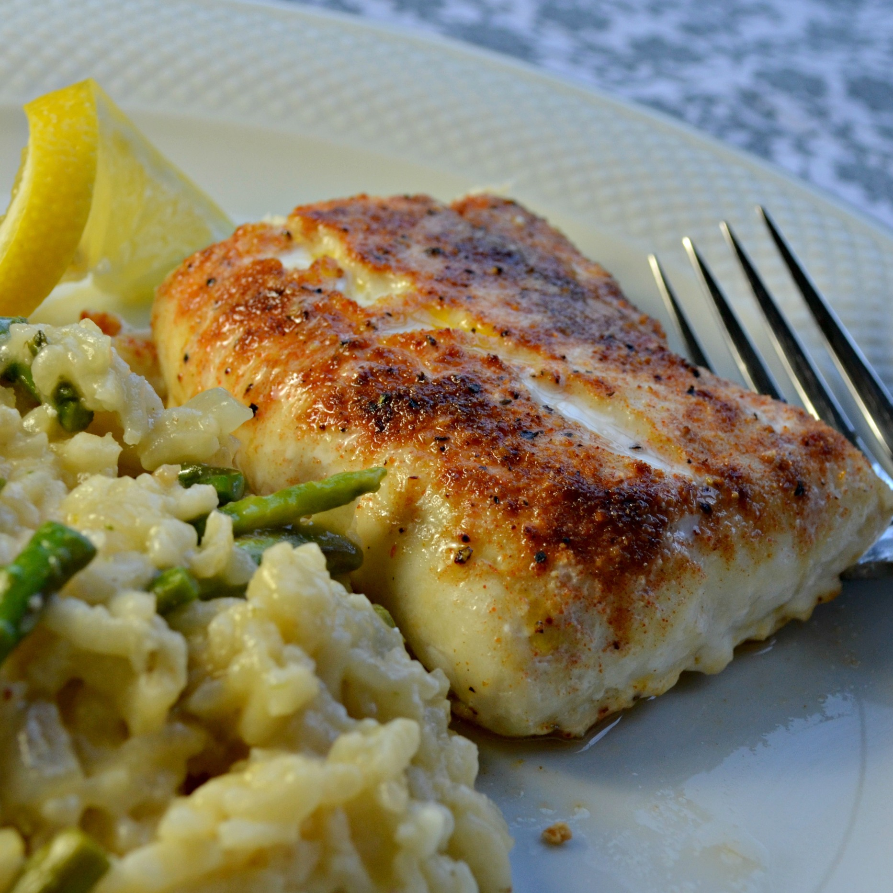

Broiled Haddock

Description
Haddock is a wonderful light and flaky white fish abundantly available in New England.
Ingredients
- cooking spray
- 2 pounds haddock fillets
- 0.5 teaspoon onion powder
- 0.5 teaspoon paprika
- 0.5 teaspoon garlic powder
- 0.5 teaspoon ground black pepper
- 0.5 teaspoon salt
- 0.25 teaspoon cayenne pepper
- 1 tablespoon butter, cut in small pieces
- 1 lemon, cut into wedges
Instructions
- Set oven rack about 6 inches from the heat source and preheat the oven's broiler. Line a baking sheet with aluminum foil and spray with cooking spray.
- Arrange haddock fillets on the prepared baking sheet. Mix onion powder, paprika, garlic powder, salt, black pepper, and cayenne pepper in a small bowl; sprinkle seasoning over haddock. Dot haddock with pieces of butter.
- Broil in the preheated oven until fish is easily flaked with a fork, 6 to 8 minutes. Serve with lemon wedges.